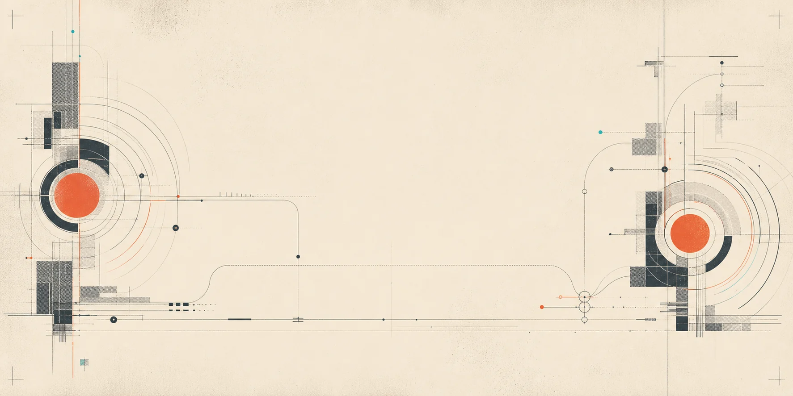
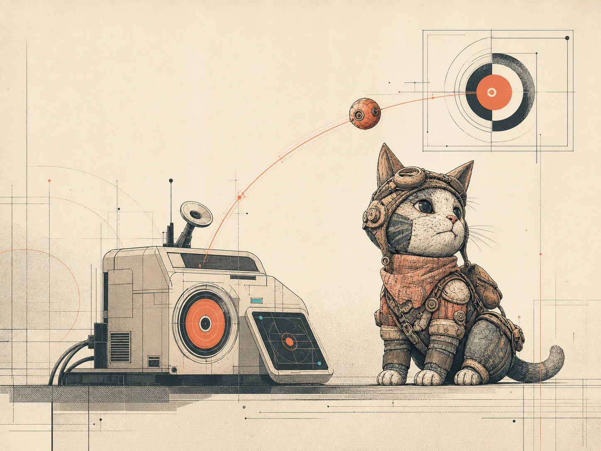

See the surface
Capture the active window, screenshot, accessibility tree, and Apple Vision OCR.
Native macOS automation
Each macOS run can include video, screenshots, accessibility context, and traces.
Built for agent runs
Action lets agents use the real interface and records the run as it happens. The finished session is ready to review or replay.
Capture the active window, screenshot, accessibility tree, and Apple Vision OCR.
Prefer semantic, DOM, or AX evidence before falling back to coordinates.
Run deterministic actions through native controls with explicit runtime state.
Write the video, trace, screenshots, manifest, and finished marker as one session.
Dogfood capture
A real take from Mira’s persistent Chrome profile while Midjourney explored the mark used throughout this page.
“The agent records the work, then shares the run.”
The native recording probe runs inside a real AppKit lifecycle, watches for a stop file, and writes a finished marker only after capture completes.
The selected mark carries the same visual grammar: capture corners, cursor motion, coral recording state, and a small cyan signal.
Open the MP4
One session, end to end
No daemon mystery state. No UI-only source of truth. Each transition has a reason, an owner, and an artifact trail.
Resolve permissions, process state, and the target surface.
Act, observe, and capture under explicit session state.
Stop cleanly and wait for the runtime’s finished marker.
Reopen the session with its media, trace, and context intact.
Durable output
A capture should explain itself later. Action preserves the media alongside the runtime context that produced it.
Field companion
Mira is the companion direction for following a session, surfacing what changed, and turning raw capture into an inspectable handoff.
Read the inspection direction
Developer loop
The local workflow builds and signs a real app bundle, reports native permission state, and keeps recording completion explicit.